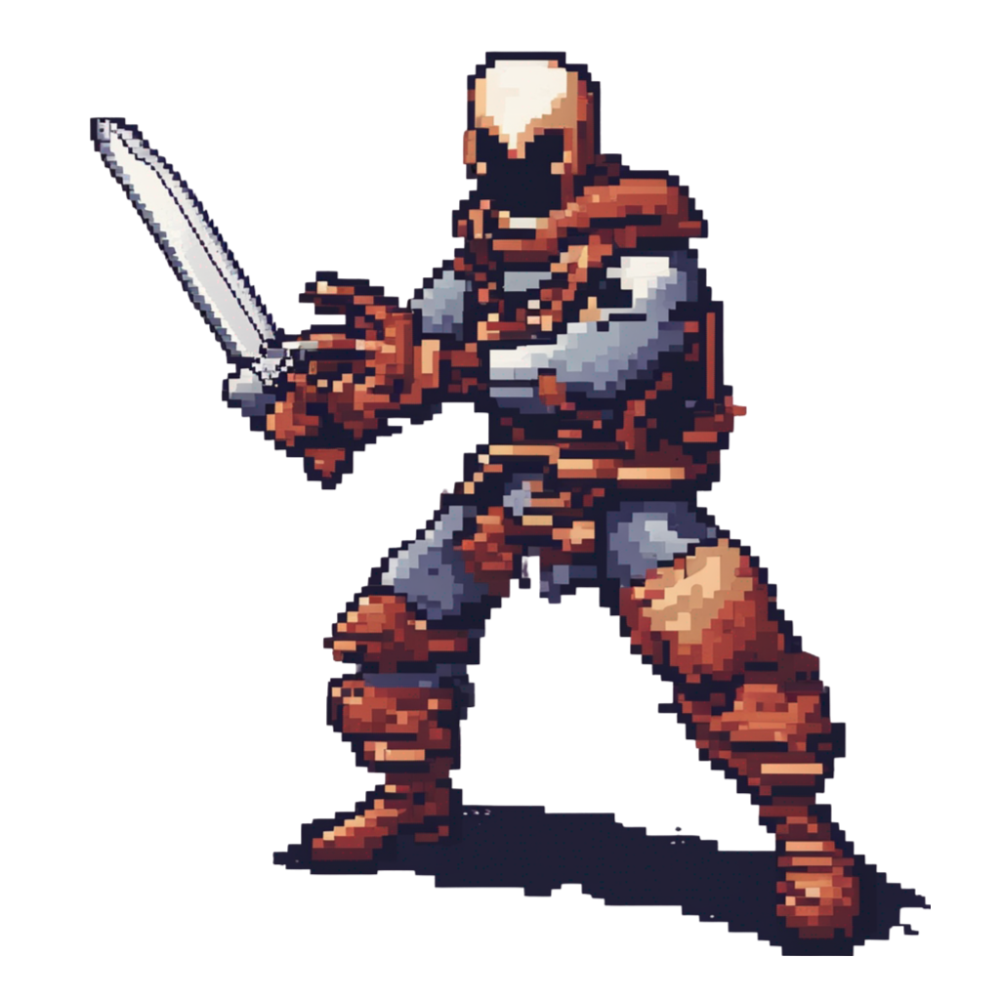

Generative AI - Generating game assets
Team 3
Welcome to my showcase page where I present the results of a fascinating challenge that pushed the boundaries of creativity and innovation. For this endeavor, I embarked on a journey to harness the power of machine learning to create game assets through a DreamBoost model.
The challenge centered around leveraging advanced techniques in machine learning, particularly using the DreamBoost model, to generate diverse and imaginative game assets. By employing cutting-edge algorithms and training methodologies, I aimed to produce assets that not only met the functional requirements of a game but also sparked the imagination of players worldwide.
The DreamBoost model served as the cornerstone of this endeavor, combining the capabilities of generative adversarial networks (GANs) with state-of-the-art techniques in deep learning. Through extensive training on diverse datasets and meticulous fine-tuning, the model learned to understand the intricate nuances of game asset creation, ranging from characters and environments to objects and textures.
The results of this challenge are showcased here, offering a glimpse into the realm of limitless possibilities that emerge when technology and creativity converge. Each game asset is a testament to the power of artificial intelligence to transcend conventional boundaries and inspire new forms of expression in the gaming industry.
As you explore this page, I invite you to immerse yourself in the world of imagination and innovation, where every pixel tells a story and every line of code unlocks a new adventure. Together, let us embark on a journey where dreams become reality, and the boundaries of possibility are redefined.
Thank you for joining me on this exhilarating quest, and I hope you enjoy the fruits of our exploration into the boundless realm of game asset generation.
Fine-Tuning
Pixel art background: Exploring diverse enviroments
In our quest to redefine the boundaries of creativity and innovation, we delved into the realm of pixel art generation using the powerful Dreamboost model. our endeavor aimed to capture the essence of idverse enviroments, each imbued with its own unique charm and allure.
Desert Dunes

Enchanted Jungle


Mystical Characters
Mage: Cloaked in robes adorned with arcane symbols, the mage wielded her wand with grace, harnessing the power of magic to shape destinies and defy the darkeness

Assassin: A shadow in the night, the assasin prowled the streets with silent footsteps, a master of stealth and deception, poised to strike with deadly precision. 
Orc: Towering over the landscape, the ogre brandished his mighty axe, a force of nature unleasehed upon the realm. With each swing, the earth trembled, and legends were born

Viking: Clad in armor forged from the fires of battle, the viking stood as a guardian of pixelated realms his axe raised in defiance against the forces of chaos and tyranny.